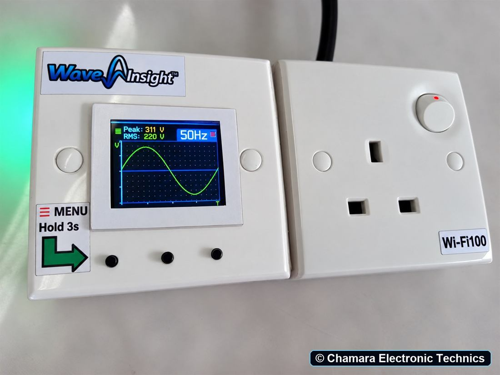
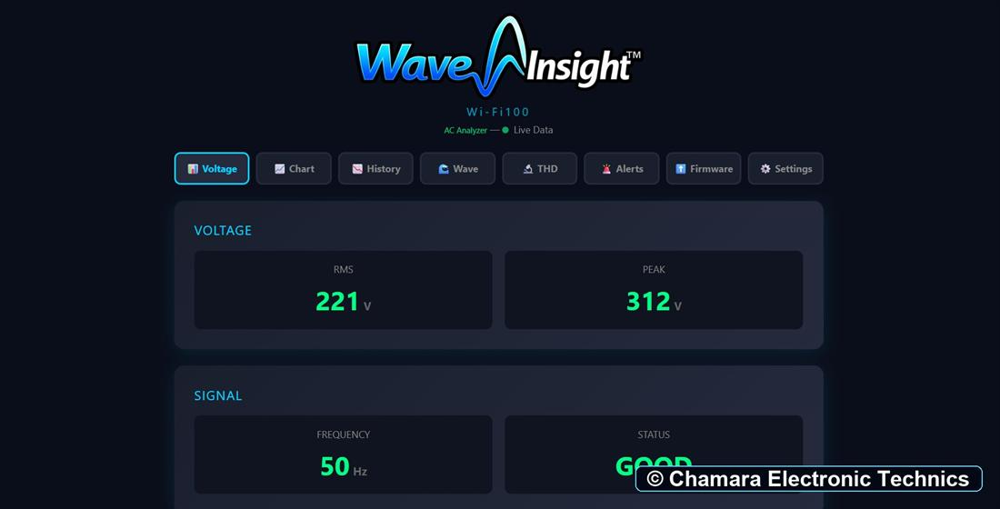
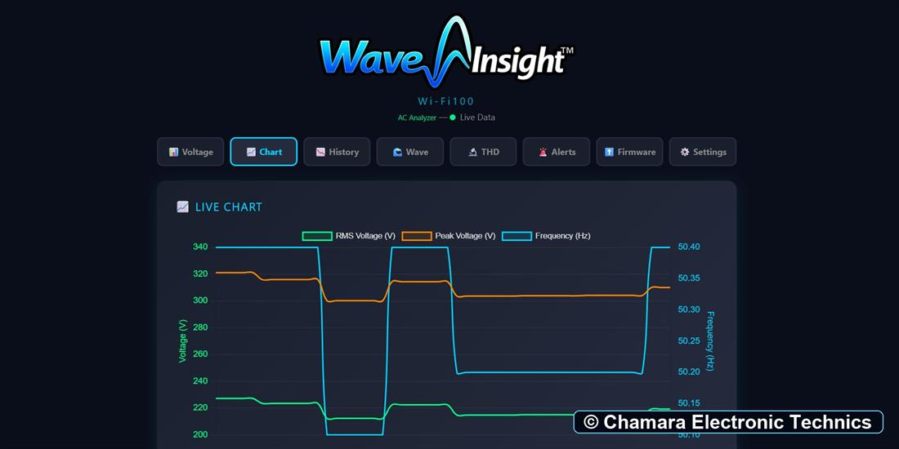
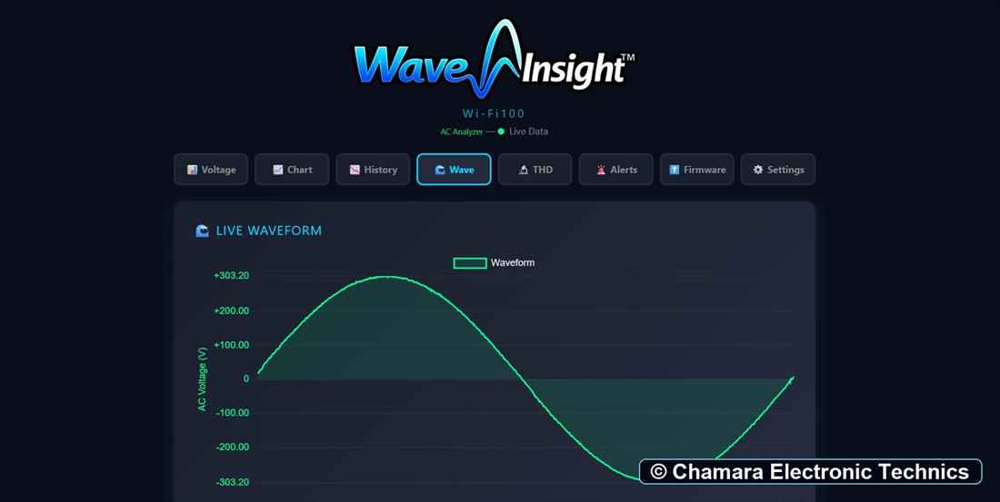
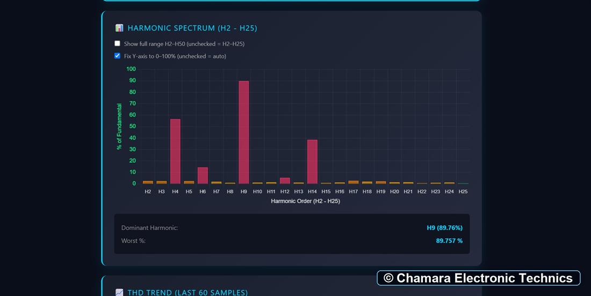

Live dashboard
View changing voltage, frequency, and waveform readings in a browser while monitoring your AC source.

Wi-Fi100 brings live AC measurements, waveform views, and power-quality information together in a clear browser dashboard.
Check voltage and frequency, follow the waveform, review harmonics and history, and configure message alerts for the conditions that matter to you.
RMS voltage, peak voltage, and frequency.
Live waveform, THD, and harmonic spectrum views.
Charts and configurable email or Telegram notifications.
View changing voltage, frequency, and waveform readings in a browser while monitoring your AC source.
See the waveform shape and compare the signal with its reference to spot changes more easily.
Review total harmonic distortion and individual harmonic levels in clear charts.
Use trend and history charts to review how readings change over time.
Configure measurement thresholds and receive alerts by email or Telegram.
Choose the alert limits and dashboard options that suit your monitoring needs.
See live readings, trends, waveform shape, and harmonic information in separate, easy-to-follow views.




The demonstration video will be added here after filming.